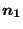
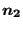
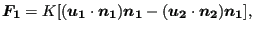
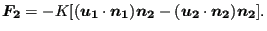

Next: Two-node 3-dimensional spring (SPRINGA) Up: Element Types Previous: One-node 3-dimensional spring (SPRING1) Contents
This is a spring element which is attached to two nodes (Figure 79). The directions
 and
 determining the action of the spring
have to be defined by the user
underneath the *SPRING keyword card by specifying the
appropriate degrees of freedom. These degrees of freedom can be local if the
ORIENTATION parameter is used on the *SPRING card. Usually, it does not make
sense to take a different degree of freedom in node 1 and node2. If
 is the
displacement in node 1 (and similar for node 2) and
is the
displacement in node 1 (and similar for node 2) and  is the spring
constant, the force in node 1 is obtained by:
is the spring
constant, the force in node 1 is obtained by:
|  | (16) |
and the force in node 2 by:
|  | (17) |
A nonlinear spring can be defined by specifying a piecewise linear force versus elongation relationship (underneath the *SPRING card).